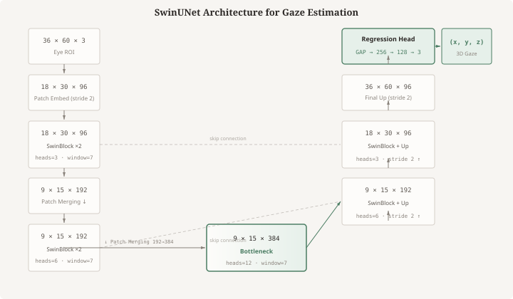
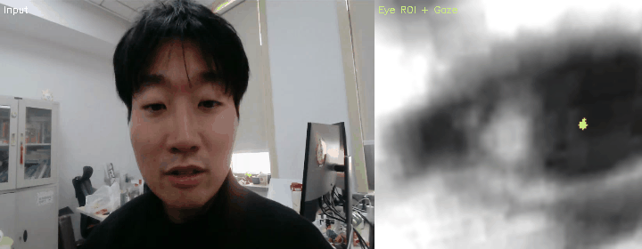
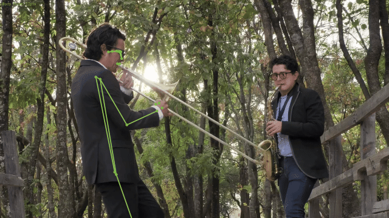

计算机视觉眼震监测 + 三个月居家前庭康复 —— 让院外发作有证据，让居家训练可量化
眩晕突发突止，到院时症状已缓解。专业 VNG/vHIT 覆盖不了发作窗口。
前庭康复依赖高频训练，纸质处方不记录动作质量与训练剂量。
市场已有院内设备和通用 App，中间缺的是院外连续管理——无法在发作时采集证据，也无法在康复中持续量化反馈。
| Pipeline 1 · 眼震监测 | Pipeline 2 · 前庭康复 | |
|---|---|---|
| 周期 | 约 1 个月 | 约 3 个月或长期 |
| 核心交付 | 发作视频、眼动序列、复诊摘要 | 训练处方、动作反馈、症状趋势、结疗报告 |
| 商业作用 | 引导复诊；建立产品入口 | 主要疗程收入；维持长期随访 |
门诊评估 → 医生开方 → 居家监测/训练 → 数据回传 → 医生复核调方 → 结疗或复训
基于 SwinUNet + MediaPipe 的端到端管线：人脸检测 → 眼区透视校正 → 3D 视线估计 → 眼震模式识别 → 医生复核报告。


▲ SwinUNet-VOG 真实输出：MediaPipe 眼区定位 + 3D gaze + CLAHE
VOR ×1/×2，逐步提高头动速度。记录头动速度、幅度、目标保持。
对特定动作分级暴露。记录动作类别、诱发强度、恢复时间。
站立、转身、转头走。记录姿势摇摆、步速、近跌倒事件。
视动刺激与场景暴露。记录刺激参数、视觉敏感评分、耐受趋势。
目标患者：外周前庭低功能 · BPPV 复位后残余 · PPPD / 视觉依赖 · 前庭偏头痛稳定期 · 老年平衡障碍
每帧同时提取身体 33 关键点 + 骨架连线。MediaPipe Pose，无需第三方模型。
| 层级 | 设备配置 | 场景 |
|---|---|---|
| 轻度 | 摄像头 + 投影主机 | 自主凝视稳定与视觉运动训练 |
| 中度 | + IMU 传感器 + 平衡板 | 头动、姿势与重心反馈 |
| 重度 | + 安全扶手/保护 | 低强度受保护任务；治疗师监护 |

▲ MediaPipe Pose: 骨架实时叠加 + 33 关键点跟踪
不与专业前庭实验室拼参数，在居家连续管理、康复疗程和医生闭环上形成差异。
启发式相对评分，非第三方实测。
全国三级医院 4,111 家 · 社区中心 10,228 个 · 乡镇卫生院 33,334 个 (2024)。进入顺序：强神经内科/眩晕中心 → 区域转诊 → 基层承接。
| 模块 | Pipeline 1 · 眼震 | Pipeline 2 · 康复 |
|---|---|---|
| 检测管线 | ✅ SwinUNet + MediaPipe 全链路 | ✅ MediaPipe Pose 双信号采集 |
| 原型/Demo | ✅ VertiWisdom PDF 报告 | ✅ iPhone 真机构建 + 视频导入 |
| 量化算法 | 持续优化（方向、慢相速度） | 骨架可视化完成；指标接入中 |
| 临床验证 | 待开展 | 待开展 |
下一步：真机验证 → 四模式训练流程接入 → Pipeline 1 临床对照 → Pipeline 2 软硬件工程启动
Pipeline 1 解决「发作时看不到」
Pipeline 2 解决「回家后管不到」
原型与技术路线已给出可实施方案
下一步：临床验证与商业落地